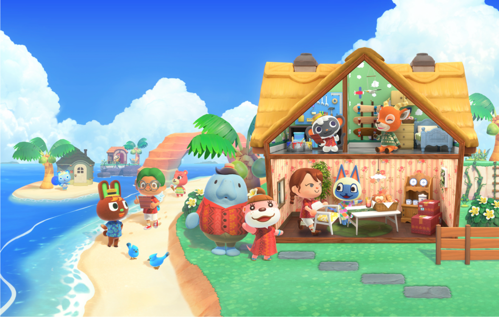

Each day brings new discoveries
Live life at your own pace as you garden, fish, decorate, hunt for bugs and fossils, get to know the animal residents, and more. The time of day and seasons match real life, so something is happening on your island whether you’re there or not.



 Catch of the day
Catching insects, diving for sea creatures, and fishing for—well, fish—are popular activities on your island. You can find different critters depending on the season and time of day. Each newly discovered creature is automatically added to your in-game Critterpedia.
Give your island a personal touch
Customize your community at your own pace with greenery, furniture, and decorative items you can place anywhere you want—inside and outside! You can use what you craft at Tom Nook’s workbench to decorate your island paradise.
Catch of the day
Catching insects, diving for sea creatures, and fishing for—well, fish—are popular activities on your island. You can find different critters depending on the season and time of day. Each newly discovered creature is automatically added to your in-game Critterpedia.
Give your island a personal touch
Customize your community at your own pace with greenery, furniture, and decorative items you can place anywhere you want—inside and outside! You can use what you craft at Tom Nook’s workbench to decorate your island paradise.